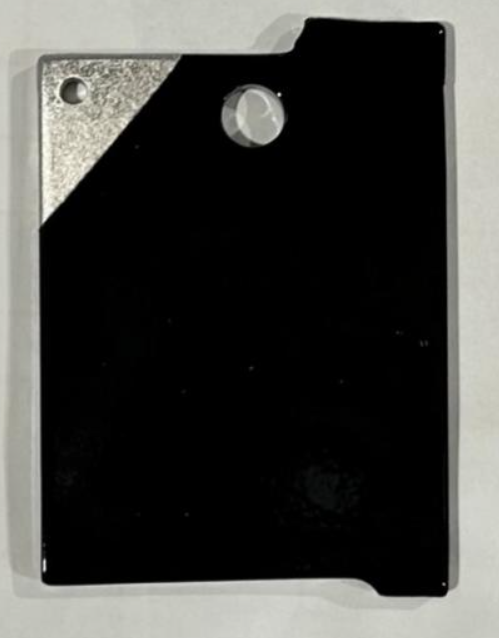

Case Study 04
Corrosion & Coating Validation
Rebuilding coating selection from first principles by replacing ad hoc decisions with a structured validation framework. Designed testing methods linking durability, manufacturability, and cost to enable selection of production-ready coating systems.
Short Summary
Rebuilding coating selection from first principles by replacing ad hoc decisions with a structured validation framework. Designed testing methods linking durability, manufacturability, and cost to enable selection of production-ready coating systems.
The Problem
Coating and corrosion performance were not meeting durability expectations, and decisions were being made based on fragmented data and vendor assumptions rather than a unified evaluation framework.
Constraints
- Marine exposure created a severe durability environment
- Candidate systems had to be evaluated across durability, cost, and manufacturability
- Testing needed to reflect real production constraints, not just ideal lab conditions
- Vendor coordination and sample preparation had to fit development timelines
My Approach
- Started from first principles by identifying core failure mechanisms (galvanic interaction, coating breakdown, environmental cycling)
- Designed a validation program centered on realistic use conditions
- Coordinated with vendors to produce representative test coupons
- Structured evaluation criteria to connect test results directly to production decisions
What I Built
- A practical corrosion and coating validation framework for marine hardware
- Coupon-based test articles and repeatable evaluation methodology
- A decision-making structure linking technical performance to cost and manufacturability
Results
- Established a structured program for evaluating production-ready coating systems
- Enabled consistent comparison across candidate solutions (IN PROGRESS)
- Created a foundation for informed material and process selection (IN PROGRESS)
What Went Wrong / Iterations
Difficult to balance idealized lab settings and real environment. Having strict comparisons and treatments of each coupon from different suppliers introduces unexpected process risk and variability. Iteration focused on refining test conditions and evaluation criteria to ensure results were meaningful for actual product decisions.
What I'd Do Next
Continue long-duration exposure testing on leading candidates and integrate validation results more tightly with vendor process capability and final part release criteria.
Images


Confidentiality Note
Details and visuals have been simplified to respect confidentiality while preserving the technical approach.